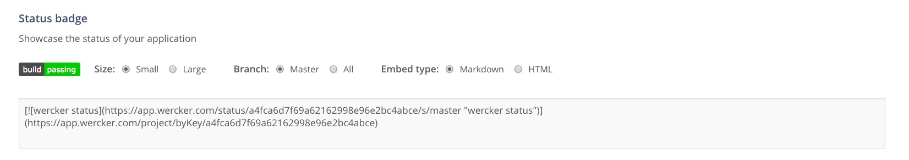
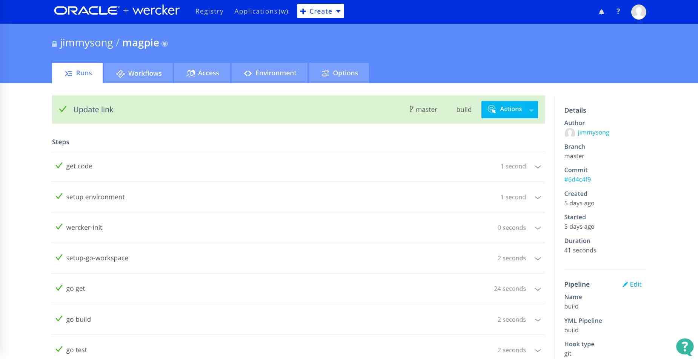
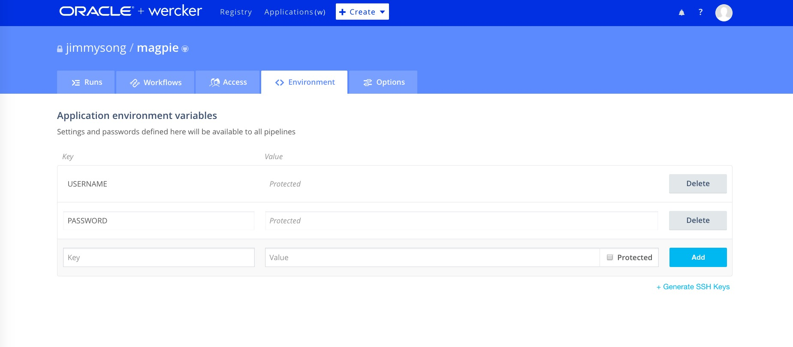
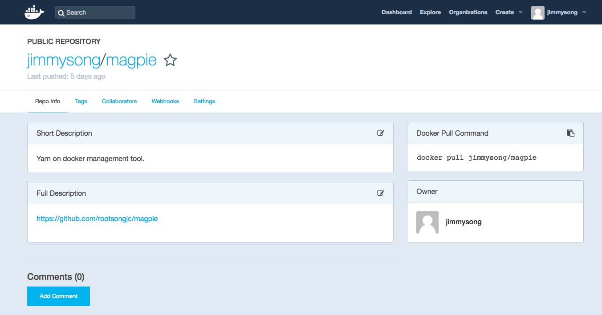

- 日期 :2017年6月22日
- 分类 : 容器
- 字数 :3826 字
- 阅读大约需要 :17 分钟
本文介绍了wercker和它的基本用法，并用我GitHub上的magpie应用作为示例，讲解如何给GitHub项目增加wercker构建流程，并将生成的镜像自动上传到Docker Hub上。
注：本文参考了Cloud Native Go书中的”持续交付“章节。
CI工具
开源项目的构建离不开CI工具，你可能经常会在很多GitHub的开源项目首页上看到这样的东西：

这些图标都是CI工具提供的，可以直观的看到当前的构建状态，例如wercker中可以在Application-magpie-options中看到：

将文本框中的代码复制到你的项目的README文件中，就可以在项目主页上看到这样的标志了。
现在市面上有很多流行的CI/CD工具和DevOps工具有很多，这些工具提高了软件开发的效率，增加了开发人员的幸福感。这些工具有：
适用于GitHub上的开源项目，可以直接使用GitHub账户登陆，对于公开项目可以直接使用：Travis-ci、CircleCI、Wercker。从目前GitHub上开源项目的使用情况来看，Travis-ci的使用率更高一些。
适用于企业级的：Jenkins
不仅包括CI/CD功能的DevOps平台：JFrog、Spinnaker、Fabric8
Wercker简介
Wercker是一家为现代云服务提供容器化应用及微服务的快速开发、部署工具的初创企业，成立于2012年，总部位于荷兰阿姆斯特丹。其以容器为中心的平台可以对微服务和应用的开发进行自动化。开发者通过利用其命令行工具能够生成容器到桌面，然后自动生成应用并部署到各种云平台上面。其支持的平台包括Heroku、AWS以及Rackspace等。
Wercker于2016年获得450万美元A轮融资，此轮融资由Inkef Capital领投，Notion Capital跟投，融资所得将用于商业版产品的开发。此轮融资过后其总融资额为750万美元。
Wercker于2017年4月被Oracle甲骨文于收购。
为什么使用Wercker
所有的CI工具都可以在市面上获取，但为何要建议使用Wercker呢？依据云之道的准则评估了所有工具，发现Wercker正是我们需要的。
首先，无须在工作站中安装Wecker，仅安装一个命令行客户端即可，构建过程全部在云端进行。
其次，不用通过信用卡就可使用Wercker。当我们迫切希望简化流程时，这是一件令人赞叹的事。付款承诺这一条件大大增加了开发者的压力，这通常是不必要的。
最后，Wercker使用起来非常简单。它非常容易配置，不需要经过高级培训或拥有持续集成的博士学位，也不用制定专门的流程。
通过Wercker搭建CI环境只需经过三个基本步骤。
- 在Wercker网站中创建一个应用程序。
- 将wercker.yml添加到应用程序的代码库中。
- 选择打包和部署构建的位置。
如何使用
可以使用GitHub帐号直接登录Wercker，整个创建应用CI的流程一共3步。
一旦拥有了账户，那么只需简单地点击位于顶部的应用程序菜单，然后选择创建选项即可。如果系统提示是否要创建组织或应用程序，请选择应用程序。Wercker组织允许多个Wercker用户之间进行协作，而无须提供信用卡。下图为设置新应用程序的向导页面。

选择了GitHub中的repo之后，第二步配置访问权限，最后一步Wercker会尝试生成一个wercker.yml文件（后面会讨论）。不过至少对于Go应用程序来说，这个配置很少会满足要求，所以我们总是需要创建自己的Wercker配置文件。
安装Wercker命令行程序
这一步是可选的，如果你希望在本地进行wercker构建的话才需要在本地安装命令行程序。本地构建和云端构建都依赖于Docker的使用。基本上，代码会被置于所选择的docker镜像中（在wercker.yml中定义），然后再选择执行的内容和方法。
要在本地运行Wercker构建，需要使用Wercker CLI。有关如何安装和测试CLI的内容，请查看 http://devcenter.wercker.com/docs/cli 。Wercker更新文档的频率要比本书更高，所以请在本书中做个标记，然后根据Wercker网站的文档安装Wercker CLI。
如果已经正确安装了CLI，应该可以查询到CLI的版本，代码如下所示。
Version: 1.0.882
Compiled at: 2017-06-02 06:49:39 +0800 CST
Git commit: da8bc056ed99e27b4b7a1b608078ddaf025a9dc4
No new version available
本地构建只要在项目的根目录下输入wercker build命令即可，wercker会自动下载依赖的docker镜像在本地运行所有构建流程。
创建Wercker配置文件wercker.yml
Wercker配置文件是一个YAML文件，该文件必须在GitHub repo的最顶层目录，该文件主要包含三个部分，对应可用的三个主要管道。
- Dev：定义了开发管道的步骤列表。与所有管道一样，可以选定一个box用于构建，也可以全局指定一个box应用于所有管道。box可以是Wercker内置的预制Docker镜像之一，也可以是Docker Hub托管的任何Docker镜像。
- Build：定义了在Wercker构建期间要执行的步骤和脚本的列表。与许多其他服务（如Jenkins和TeamCity）不同，构建步骤位于代码库的配置文件中，而不是隐藏在服务配置里。
- Deploy：在这里可以定义构建的部署方式和位置。
Wercker中还有工作流的概念，通过使用分支、条件构建、多个部署目标和其他高级功能扩展了管道的功能，这些高级功能读着可以自己在wercker的网站中探索。
示例
我们以我用Go语言开发的管理yarn on docker集群的命令行工具magpie为例，讲解如何使用wercker自动构建，并产生docker镜像发布到Docker Hub中。
下面是magpie这个项目中使用的wercker.yml文件。
box: golang
build:
steps:
# Sets the go workspace and places you package
# at the right place in the workspace tree
- setup-go-workspace
# Gets the dependencies
- script:
name: go get
code: |
go get github.com/rootsongjc/magpie
# Build the project
- script:
name: go build
code: |
go build -o magpie main.go
# Test the project
- script:
name: go test
code: |
go test ./...
- script:
name: copy files to wercker output
code: |
cp -R ./ ${WERCKER_OUTPUT_DIR}
deploy:
steps:
- internal/docker-push:
username: $USERNAME
password: $PASSWORD
cmd: /pipeline/source/magpie
tag: latest
repository: jimmysong/magpie
此文件包含两个管道：build和deploy。在开发流程中，我们使用Wercker和Docker创建一个干净的Docker镜像，然后将它push到Docker Hub中。Wercker包含一个叫做Internal/docker-push的deploy plugin，可以将构建好的docker镜像push到镜像仓库中，默认是Docker Hub，也可以配置成私有镜像仓库。
box键的值是golang。这意味着我们使用的是一个基础的Docker镜像，它已经安装了Go环境。这一点至关重要，因为执行Wercker构建的基准Docker镜像需要包含应用程序所需的构建工具。
这部分存在一些难以理解的概念。当使用Wercker进行构建时，其实并没有使用本地工作站的资源（即使在技术层面上，构建也是在本地执行的），相反，使用的是Docker镜像中的可用资源。因此，如果要使用Wercker编译Go应用程序，需要首先运行包含Go的Docker镜像。如果想要构建唯一的工件，无论它是在本地还是在Wercker的云端运行，使用Docker镜像都是完全合理的。
本次构建中运行的第一个脚本是go get。这一步可以go get可能需要的、但不包含在基础镜像中的任何东西。无论为脚本设置什么名称，构建输出都会有所显示，如下图所示。

在build管道中，接下来的两个脚本执行的构建和测试流程，最后一个脚本是将构建后的文件拷贝到wercker的输出目录中，我们将使用该目录构建docker镜像。
我们注意到deploy中有两个变量：$USERNAME、$PASSWORD，这是我们自定义的变量，当你不希望将隐私内容直接写在代码中的时候，可以在wercker中自定义变量，变量可以只作用于单个pipeline，也可以是所有pipeline共享的。

可以将变量设置成Protected模式，这样只有设置者本人才知道该变量的值是什么，其他人即使有共享访问权限，也看不到该变量的值，但可以重新设置来覆盖原值。
Deploy管道中配置的docker镜像的repo、tag和cmd命令，其他容器配置都在代码顶层目录的Dockerfile中定义。当整个构建流程完成后，就可以在docker镜像仓库中看到刚构建的镜像jimmysong/magpie:latest了。

总结
当然以上只是一个很简单的示例，还有很多可以优化的流程，比如我们在示例使用latest作为docker镜像的tag，wercker本身提供了很多内置和构建时环境变量，我们可以在wercker.yml文件里获取这些变量作为命令中的值。
当比于其他CI工具，wercker配置简单，更易于使用，同时在wercker的registry中还可以看到很多别人构建的pipline可供参考，还有十分友好的workflows可用于编排构建流程和依赖。
当然CI工具的功能不止这些，利用它可以实现很多自动化流程，节约我们的时间，解放生产力，更多玩法就要大家自己去探索了。